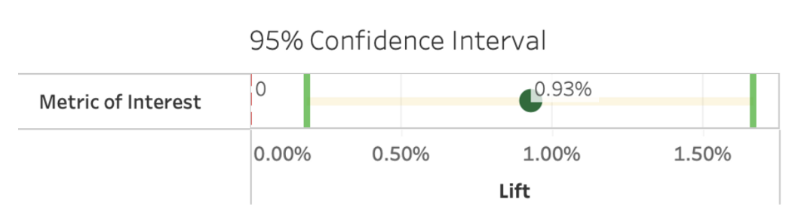
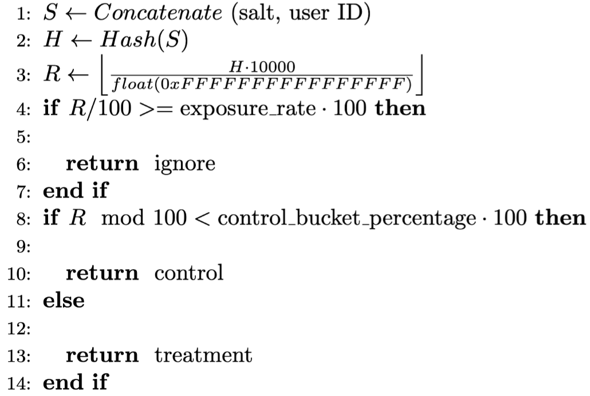
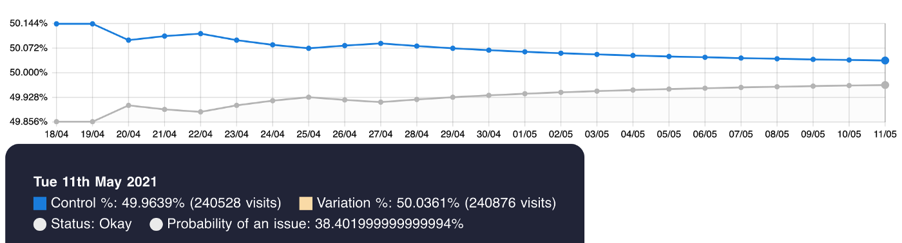
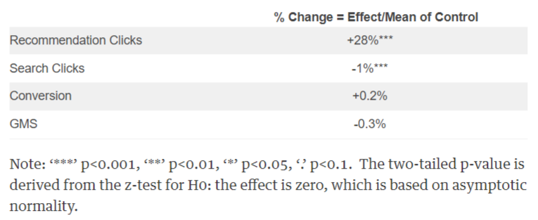
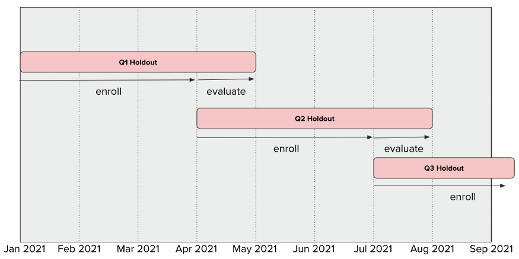

A/B Testing
Misc
- Resources
- Practical Guide to Controlled Experiments on the Web (Paper)
- General non-parametric A/B testing based on the Random Forest (Paper)
- Uses the sum of OOB errors for each group as a test statistic
- {hypoRF}
- Google Analytics switched in 2017 from exact user counts to estimates of user counts by default. Estimates have Stderr and have significant effects on A/B testing. Think this can be switched to exact users in settings, see link
- The Perils of Using Google Analytics User Counts in A/B Testing
- With user estimates and greater than 12K users per test arm, accuracy begins to suffer. Occurrences of significant p-values becomes inflated
- Maybe even worse with Adobe Analytics which uses a similar algorithm to estimate their user counts
- Regardless of the test results, there may be business considerations to take into account when deciding whether to add a feature
- It’s believed user experience will be improved
- One group shows positive results while another doesn’t, but in order to maintain parity you decide to add the feature
- You were unable to perform the test during the optimal part of the year, and you have reason to believe the results would’ve been positive if the test was conducted during that time period.
- Often a good idea to limit outcome measurement to events that happen (or don’t happen) within a reasonable attribution window from exposure or assignment.
- Better to use the first exposure as the attribution window start, as it should be unaffected by the experiment variants
- Example: A simple exposure of seeing “sign up” for the control and “sign up today!” for the treatment
- The attribution window should be a within hours of exposure as we don’t expect the call-to-action text to have long-lasting effects.
- When running experiments on as few users as possible to reach a specified level of statistical significance, experiments may end up being statistically significant but with little precision in terms of the estimate
- Allows us to have conviction in rolling out the treatment to production
- No certainty of the expected impact of the treatment
- Issues with this approach (See Universal Holdout section for solution)
- Short-term impact from a product feature may not equal its longer-term impact (e.g. novelty effect)
- One algorithm’s performance advantage over another may fade over time
- Certain metrics are lagging indicators where we cannot observe any effects unless we extend the time horizon
- Optimal Stopping
- Also See Multi-Armed Bandit section
- Sequential Probability Ratio Test (article)
- Performs a rolling likelihood ratio test (LRT) and once the value passes a threshold, the experiment’s p-value has a certain probability of correctly accepting/rejecting the null hypothesis
- Use gated dial-up to minimize risk to business
- Process
- Assign users that will be in the experiment and not in the experiment
- This population can be just 1% of the population in the beginning, and increase from there.
- For users in the experiment, divide them randomly with equal probability into control and treatment
- Assign users that will be in the experiment and not in the experiment
- ** Don’t use gradual dial-up over the whole population**
- Example: Start with a 1% treatment, dial up to 5% after a week, then to 10%, 25%, and finally to 50%
- Issues:
- Cannot use the data from the dial-up period itself in the A/B test because it may be biased by seasonal effects.
- Pre-exposure effect: some of the users in the treatment group have already had exposure to the treatment before and this pre-exposure can change their actions during the measured test period.
- The gated dial-up solves these issues because both groups in the experiment are of the same size at all times and no participant in the treatment has been pre-exposed
- Process
{kind=link}
Terms
- A/A Testing - Uses A/B testing to test two identical versions of a page against each other. Typically, this is done to check that the tool being used to run the experiment is statistically fair. In an A/A test, the tool should report no difference in conversions between the control and variation, if the test is implemented correctly. Useful for exposing experiments with high false positive rates. (link, article) (Also see Workflow >> Check A/A Variation)
- Exploitation - One exploits a single action without knowing the rewards of the other actions.
- e.g. A person finds a good restaurant and repeatedly goes to that restaurant instead of trying others
- Exploration - Always exploring the other actions to acquire as much information as possible to finally choose the best action
- e.g. A person repeatedly goes to a new restaurant instead of always going to the same restaurant
- Minimum Detectable Effect (MDE) - The smallest improvement over the baseline we are willing to detect in a controlled experiment. How large the difference should be in order to generate statistically significant outcomes (generally provided by the A/B testing platform)
- Sample Ratio Mismatch (SRM) - Refers to the mismatch between the sample ratio set by the experimenter and the observed sample ratio (example)
- e.g. Suppose you have an A/B test where you expected a 50/50 split of users in each test group. Instead, the Control and Variation groups are off by around 7%.
Workflow
Misc
Pre-Experiment
- Think About the Product & Talk with the Product Manager (PM)
- Explore the product logic and user journey in detail
- Feasibility and Impact Questions
- What are the hypotheses?
- Can we find calculable metrics to test that?
- What are the risks for our product and users?
- Is there a network effect?
- Is it possible for users to demonstrate a strong novelty effect or change aversion
- Is it fair to keep some users from our new feature treatment?
- Why do we need this feature?
- What is our expected gain from this feature, is it short-term or long-term?
Design
- Also see Design and Metrics sections
- Evaluation Metrics: What are our north star metrics, directly-influenced metrics, guardrail metrics, and adoption metrics in the treatment group?
- Apart from the business interpretation, it would be better for the evaluation metrics to have lower variance and be sensitive to changes.
- Example: Add Top 10 movies/shows feature to Netflix homepage
- Hypothesis: “Showing members the Top 10 ‘experience’ will help them find something to watch, increasing member joy and satisfaction.”
- Primary Metric: Engagement with the Netflix app
- Metric answers, “Are the ideas we are testing helping our members to choose Netflix as their entertainment destination on any given night?”
- Research shows that this metric is correlated, in the long term, with the probability that members will retain their subscriptions.
- Secondary Metrics:
- Title-level viewing of those titles that appear in the Top 10 list
- i.e. Viewing of titles that appear in the Top 10 list
- Fraction of viewing that originates from that Top 10 row of movies vs other parts of the UI
- Title-level viewing of those titles that appear in the Top 10 list
- Guardrail Metric: Compare customer service contacts for the control and treatment groups
- An increase may indicate member confusion or dissatisfaction
- Articulate a causal chain
- Show how user behavior will change in response to the new product experience (aka feature) to the change in our primary decision metric
- Monitor secondary metrics along this chain
- Helps build confidence that any movement in our primary metric is the result of the causal chain we are hypothesizing, and not the result of some unintended consequence of the new feature (or a false positive)
- Confident in positive effect of primary metric IF secondary metrics have also shown an increase
- Skeptical of positive effect of primary metric IF secondary metrics have shown a decrease.
- Unit of Diversion: Shall we randomize the test based on user_id or session_id. (See Assignment)
- Set the False Positive Rate (typically 5%)
- Postulate an effect size and calculate the sample size
- For different evaluation metrics and various minimum detectable effects (MDE), what are the necessary sample sizes for the result to be statistically significant?
- Very often we have to retrieve historical data and calculate on our own when the metrics of interest are too specific and are not supported by the A/B test platforms.
- Choice of effect size that you want to be able to detect should be meaningful in terms of business value
- For different evaluation metrics and various minimum detectable effects (MDE), what are the necessary sample sizes for the result to be statistically significant?
- Experiment Duration & Traffic Portion: This usually depends on the required samples size and the eligible traffic size that could potentially see the new feature.
- Also take into consideration the risks of the experiment.
- Experiment Layer & Experiment Type: Determine which experiment layer to deploy our A/B tests.
- Common that most of the experiment layers have been populated with other tests.
- Options: Choose another layer or consider orthogonal experiments, if our feature is not correlated with others.
- Common that most of the experiment layers have been populated with other tests.
Check A/A Variation
- Most platforms have automated this process
- Check the A/A variation output and make sure everything is as expected — the p-values out of A/A simulations are uniformly distributed (Also see links in Terms section)
- A/A variation is the difference in key metrics between the control group (group A) and another control group (~group A). Since there is no actual difference between the two, the A/A variation is not expected to deviate from 0 in a statistically significant (p-value < 0.0005 recommended) manner. (i.e. Any detections are false positives)
- Pre-treatment A/A (e.g. 60 days): A statistically significant result from the pre-assignment test indicates bias in the A/B test
- Likely due to user assignment.
- e.g. (User Characteristics) A pre-assignment test would uncover that treatment users already had a higher number of purchases even before the experiment.
- Likely due to user assignment.
- Test under different scenarios: e.g. multiple steps in the conversion funnel (e.g., product impression, click, adding to the shopping cart, and purchase), client-side and server-side experiments, logged-out and logged-in experiments, etc.
- Keep past A/A tests and use them as a baseline Should be performed after any improvement to your experimentation platform
Run Experiment
- Check the Invariant Metrics & Experiment Set-up
- Make sure users in the treatment group see all the treated features as expected
- Can be very bad if they aren’t and you’re using the traffic bought by your advertisers for A/B testing but end up sabotaging the experiments due to wrong parameters
- Check that the diversion of traffic is random (Also see Assignment >> SRM Check)
- Typically use the Chi-squared Test to check the population across control and treatment groups
- Check that the distribution of user profiles (e.g. gender, age) is homogeneous across treatment/control groups
- Most platforms will compute these
- Make sure users in the treatment group see all the treated features as expected
- Monitor Key Evaluation Metrics
- If the key metrics and guardrail metrics drop significantly and continuously, consider taking a step back and re-evaluating the experiment for the benefit of our product and users, as the negative significant results are likely to be just a matter of time
- Start doing checks as soon as the experiment launches
- Check regularly for at least the first week for new experiments
- New experiments should be treated like intensive care patients
- **Be aware that the more you test, the greater probability of getting a false positive**
- Should apply a multiple-testing correction to the p-value (e.g. bonferoni)
- See Romano-Wolf
- See Statistical Concepts >> Null Hypothesis Significance Testing (NHST) >> Romano and Wolf’s correction
- Similar to Westfall-Young but less restrictive
- See Romano-Wolf
- Should apply a multiple-testing correction to the p-value (e.g. bonferoni)
- Check regularly for at least the first week for new experiments
Analyze the Results
- Collect the descriptive differences as well as the p-value between the treatment groups and control groups
- Do the results align with the hypothesis?
- If they do, delve deeper to understand the reasons by breaking it down into key business dimensions (e.g. new/old users, channels, geographic regions).
- If observed effect is large, it’s more likely that it’s a false positive or something went wrong with the execution of the experiment.
- Insignificant results can because of the sample size or high variance in the metrics being measured
- For reducing variance, see Experiments, Planning >> Decreasing the Sampling Variance of the Treatment Effect
- If they do, delve deeper to understand the reasons by breaking it down into key business dimensions (e.g. new/old users, channels, geographic regions).
- Look at changes in these secondary metrics to assess if any changes in the primary metric follow the hypothesized causal chain
- Is there additional supporting or refuting evidence?
- e.g. Consistent patterns across similar variants of the same feature
- If you test 20 variants and only one yields a significant movement in the primary decision metric, you should be skeptical of that one variant’s positive effect.
- With that 5% false positive rate, we expect on average one significant (1 in 20) result from random chance alone
- Compare the empirical Minimum Detectable Effect (MDE) to the actual difference in key metrics
- Often reveals how volatile the metrics are.
- Great reference when studying user behaviors or designing similar experiments in the future.
Conclusion
- If results are mixed/suggestive but not conclusive, run a second A/B experiement based on learnings from the first test
- Example: Half of the feature variants had a positive effect, but the other half did not.
- Refine these most promising variants, and run a new test
- With fewer variants to test, you can also increase the allocation size to gain more power.
- Example: Half of the feature variants had a positive effect, but the other half did not.
- Formulate Product Recommendations
- Summarize the analysis of the experiment results
- Derive a product recommendation on whether we should gradually expose more traffic to the treatment or select a more conservative strategy.
- Write the Report
- Contents
- Product Backgrounds and Feature Hypotheses
- Experiment Resign
- Result Analysis
- Product Recommendations
- Contents
Design
- Simple
- Find sample size
- Standard way: use equation with power, significance level, and effect size
- “Rule of Thumb” way: \(\text{sample size} = \frac{16\sigma^2}{\delta^2}\)
- \(\sigma\) is variance of the data
- \(\sigma\) is the effect size (stake holders or literature) (e.g. 1% increase of revenue would be practically significant)
- Calculate run time of the experiment
- Divide sample size the number of users per group (i.e. experiment and control groups)
- Round up to the next week to capture weekly seasonality, calculate weekly metrics, etc.
- Submit recommendation based on the results of the experiment
- Link results goals and business impact (see step 1) (how much does a 1% increase in click rate relate to revenue?)
- Discuss any conflicting results (e.g. rise in daily active users and bounce rate)
- Translate how each affects the user and the company
- Short term vs long term impact
- Do the benefits (e.g. dau) outweigh the drawbacks (e.g. bounce back) over the long term?
- Find sample size
Assignment
- Misc
- SpookyHash - This hash function meets all 4 characteristics of a good assignment algorithm + it’s fast (See below for characteristics)
- FNV hash function fails #3
- MD5 hash function is ~50% slower than SpookyHash
- Use a population split (e.g. userid, sessionid, cookieid). Never do a time split because it violates the identity assumption (i.e. the statistical properties of the control and treatment groups are identical), and the test results are therefore inconclusive
- Cookies have a limited life-time which makes it difficult to measure the long-term user impact
- Some browsers like Safari’s Intelligent Tracking Prevention (ITP) delete some cookies after 7 days, so if a test runs for more than a week, then users will be re-assigned after each week.
- EU’s General Data Protection Regulation (GDPR) states that website owners must receive explicit user consent before they use any cookies except those that are “strictly necessary” (and it’s hard to argue that A/B testing is strictly necessary to run a service)
- SpookyHash - This hash function meets all 4 characteristics of a good assignment algorithm + it’s fast (See below for characteristics)
- Potential Issues
- Assignment of Ineligible Users - These may be bots or users that already have an account.
- If we include many ineligible users in our analysis, we may underestimate the effect size even if their distribution across groups is uniform.
- Crossovers - These are users that manage to experience both variants.
- Example: Users may come across our site on mobile with the “sign up today!” (exposure) text, and then switch to desktop and see the “sign up” (control) message.
- Depending on the instrumentation we have in place, we may not be able to detect such users, or we may only detect them if they sign up on one device and then log in on the other device.
- Assignment Without Exposure - Due to implementation constraints, we may not be guaranteed that assigned users are actually exposed to the treatment and control.
- Example: it may be that the assignment is done on the backend while exposure happens conditionally and asynchronously on the frontend – some users may bounce in the gap between assignment and exposure, and never see the exposure (e.g. call-to-action text, sign up today!“ ).
- Multiple Exposures - Once a user has been assigned, they may get exposed to the treatment and control multiple times (without crossing over).
- Example: Users may visit the landing page repeatedly and see the “sign up” (control) or “sign up today!” (exposure) text multiple times before deciding to sign up.
- Assignment of Ineligible Users - These may be bots or users that already have an account.
- Characteristics of a good assignment algorithm (Paper)
- Users must be equally likely to see each variant of an experiment (assuming a 50–50 split). There should be no bias toward any particular variant. (i.e. uniform distribution)
- Can run a Chi-Square or KS test to compare the random numbers generated (see R in example) to the uniform distribution.
- Repeat assignments of a single user must be consistent; the user should be assigned to the same variant on each successive visit to the site.
- When multiple experiments are run concurrently, there must be no correlation between experiments. A user’s assignment to a variant in one experiment must have no effect on the probability of being assigned to a variant in any other experiment.
- The algorithm should support monotonic ramp-up, meaning that the percentage of users who see a Treatment can be slowly increased without changing the assignments of users who were already previously assigned to that Treatment.
- Users must be equally likely to see each variant of an experiment (assuming a 50–50 split). There should be no bias toward any particular variant. (i.e. uniform distribution)
- Example: Wish AI (article)
- Steps
- Concatenate salt and user ID to get string, S.
- Salt is just a string of letters & numbers (e.g. E1F53135E559C253) that gets concantenated to an object to provide an extra layer of security
- User ID can also be cookie ID, session ID, etc.
- Apply a Hash function to map the concatenated string, S, to a hash value H. Note, H follows a uniform distribution due to the uniformity property of hash values.
- Assuming the hash function is 64 bit, H is then divided by float(0xFFFFFFFFFFFFFFFF) and multiplied by 10,000 to get a uniform random number integer R ranging from 0 to 9,999.
- Divide R by 100. If R/100 \(\ge\) exposure_rate (e.g., 10%) times 100, we assign ignore to this user, and the user will be excluded in any calculations for this experiment.
- R modulo 100. Assuming there are two experiment buckets: control, treatment. If the remainder is < control bucket percentage (e.g. 50%) time 100, assign control. Otherwise, assign treatment.
- Concatenate salt and user ID to get string, S.
- One random number R is generated. The first two digits of R are used for determining exposure, and the last two digits are used for assigning treatment/control buckets. The first two digits and the last two digits of R are independent
- Steps
- Sample Ratio Mismatch (SRM) Check
Misc
- Make sure to use “users” and not “visits” or “sessions” for the check
- Don’t be concerned if early in the experiment, some mismatch occurs
Check for glaringly large or small ratios
- e.g. If you see 1,000 users in one group and 100 in the other, you know there’s a problem
Calculate the sample ratios to check ratios closer to one that might still be a problem
- \(\mbox{control} = \mbox{users\_in\_control} / \mbox{total\_users\_in\_test}\)
- \(\mbox{treatment} = \mbox{users\_in\_treatment} / \mbox{total\_users\_in\_test}\)
Test counts with Chi-Square Test
group_counts <- c(170471, 171662) p <- c(0.50, 0.50) chisq.test(x = group_counts, p = p) #> Chi-squared test for given probabilities #> data: group_counts #> X-squared = 4.146, df = 1, p-value = 0.04173
- P-values < 0.01 indicate a SRM
- For this use case, using 0.05 results in too many false positives (See article)
- We expect the type I error rate (FPR) to be less than 1%
- **Be aware that the more you test, the greater probability of getting a false positive**
- The probability of obtaining a false positive using a Chi-squared test configured at the 0.05 level can increase up to 0.14 with as few as five usages
- Should apply a multiple-testing correction to the p-value (e.g. bonferoni)
- See Romano-Wolf correction
- See Statistical Concepts >> Null Hypothesis Significance Testing (NHST) >> Romano and Wolf’s correction
- Similar to Westfall-Young but less restrictive
- See Romano-Wolf correction
- Test counts with the sequential SRM test
- Bayesian method
- See github for code, blog and paper links
{kind=link}
{kind=link}
Potential Biases
- Misc
- Also see
- These biases can cause violation in assumptions for difference-in-means post-hoc tests (e.g. Wilcoxon signed-rank test, Welch’s t-test)
- Independence of sampling between groups (e.g. Interference between variants, see below)
- Assigning samples to groups (e.g. treatment/control) at the user level, rather than the visit level, can ensure there is no cross-pollution of effects between groups if the user can see both versions.
- Independence and identical distribution (iid) of sampling within groups (e.g. treatment/control)
- Independence of sampling between groups (e.g. Interference between variants, see below)
- Condorcet Voting Paradox (article)
- When testing more than 1 treatment sequencially in binary testing scenarios, order of testing may determine the outcome
- Customer segments or groups may not have identical transitive preferences
- Example: Customer Segment preferences for treatments X, Y, Z are different (all segments have equal sample sizes)
- Segment 1: X > Y > Z
- Segment 2: Y > Z > X
- Segment 3: Z > X > Y
- Scenario 1: Test X against Y in an A/B test, then test the winner against Z
- 1st rd A/B testing: Segments 1 and 3 prefer X to Y, so X wins the first round of testing.
- 2nd rd A/B testing: Segments 2 and 3 prefer Z to X, so Z wins is the overall winner
- Scenario 2: Test Y against Z in an A/B test, then test the winner against X
- 1st rd A/B testing: Segments 1 and 2 prefer Y to Z
- 2nd rd A/B testing: Segments 1 and 3 prefer X to Y, so X is the overall winner.
- Example: Customer Segment preferences for treatments X, Y, Z are different (all segments have equal sample sizes)
- Suppose the three segments represent 45%, 35%, and 20% of the market respectively. We can still have any option be the final winner, depending on the order of testing.
- But now some tests are better than others. If we tested all three options at once in an A/B/C test, we’d learn that a plurality of the market prefers X, and we’d learn that there is no option that the market as a whole prefers.
- Primacy or Novelty Effect
- After a short time period after implementation, the effect measured in the A/B experiement sharply degrades or grows.
- Primacy Effect: A new feature is implemented and subgroup of users are reluctant to change. This subgroup may initially use the product less but eventually return to normal usage or ramp up their usage or potentially churn
- Novelty Effect: A new feature is implemented and a subgroup of users who are excited by change begin to use the product more often. This subgroup may initially use the product more but eventually ramp down their usage.
- Since these affects shouldn’t effect first time users, either:
- Conduct the A/B experiment on first time users, or
- After the experiment, investigate by comparing effects of first time users to returning users
- A long-run holdout (keeping a small control group for a long period of time) is one way to help capture this over a longer period of time
- Interference Between Variants
- Can happen when multiple variants of a feature are being test at the same time
- Assumption of user independence is violated
- Case 1: Social Media
- Users within the same social network influence each other
- If one user posts in their social media about using a product, then that influences the usage of another user in that person’s social network. If one person is in the experimental group and the other is in the control group, then the experiment is biased
- This bias dampens the measured effect: actual effect > measured effect
- Solutions:
- Create network clusters and then randomize by cluster
- Ego-Network Randomization (LinkedIn, paper)
- More scalable than randomizing by network clusters
- Focal node known as the Ego, and the nodes to whom ego is directly connected to, called Alters, with edges showing links between ego to altars or between altars
- A network effect is said to take place when a new feature not only impacts the people who receive it, but also other users of the platform, like their connections or the people who follow them
- Case 2: Two-Sided Markets
- Company resources (e.g. people) are finite. Therefore if one variant is popular, then it will consume more company resources which steals resources away from other variant groups.
- Uber has a finite amount of drivers. If a feature variant becomes popular before other variants, then more users in that variant group will request more rides which means more drivers will be occupied by that variant group. This reduces driver availability for other variant groups which inflates the effect for first variant to acquire an outsized proportion of the company’s resources.
- This bias inflates the measured effect for some variants and dampens them in others.
- Solutions:
- Geo-based Randomization
- Company resources are usually allocated by region. So by splitting variant groups according to region, resources from one region can’t be leached by another region and therefore one feature variant can’t leach resources from another variant
- Time-based Randomization
- Select a day of the week for each variant to be ran. Since Tuesday’s resources can’t be used on Wednesday, a variant can’t leach resources from another variant
- Best used when treatment effect is short-lived (e.g. surge pricing, not referral programs)
- Geo-based Randomization
- Type I Error (aka False Positive): The models perform equally well, but the A/B test still produces a statistically significant result. As a consequence, you may roll out a new model that doesn’t really perform better. It’s a false positive. You can control the prevalence of this type of error with the p-value threshold. If your p-value threshold is 0.05, then you can expect a Type I error in about 1 in 20 experiments, but if it’s 0.01, then you only expect a Type I error in only about 1 in 100 experiments. The lower your p-value threshold, the fewer Type I errors you can expect.
- Type II Error (aka False Negative): The new model is in fact better, but the A/B test result is not statistically significant. In statistical terms, your test is underpowered, and you should either collect more data, choose a more sensitive metric, or test on a population that’s more sensitive to the change.
- Type S Error (Sign Error): The A/B test shows that the new model is significantly better than the existing model, but in fact the new model is worse, and the test result is just a statistical fluke. This is the worst kind of error, as you may roll out a worse model into production which may hurt the business metrics.
- Type M Error: (Magnitude Error): The A/B test shows a much bigger performance boost from the new model than it can really provide, so you’ll over-estimate the impact that your new model will have on your business metrics.
- Random assignment may fail to distribute power users equally: If your user population contains a few users that create a large amount of user activity, then a random A/B assignment is not guaranteed to distribute these users equally. This may violate the identity assumption and make the test results mode difficult to interpret.
- Treatment Self-Selection: If users themselves can opt into a treatment group, the A/B test violates the identity assumption: the two groups are not identical, but instead the treatment group consists of a particular subset of users, namely those more willing to take part in experiments. In that case we will not be able to tell whether the difference between the groups is due to the treatment or due to the sample differences.
Metrics
- Also see
- Most A/B tests should be based on user-based metrics, ideally Average Revenue per User. Having user-based instead of session-based metrics means that:
- The results are much less ambiguous in interpretation and can have a much greater impact on decision-making.
- Unlike metrics based on sessions or page views, user-based metrics are as close as possible to independent observations which is a crucial assumption in many statistical tests, thus promoting statistical validity.
- Focus on ‘fast-twitch’ metrics, such as those measuring conversion rates or user engagement: this might be a difference between the two groups you can meaningfully measure (and that you know in the long-run is correlated with driving more revenue or more users)
- Revenue or the number of users are likely long-run metrics and due to the experiment (e.g. changing the color scheme of your website), it may not possible to produce a measurable effect for one experiment using those metrics
- Look at the historical movements of any metric to understand how noisy it is, if it is impacted by seasonality etc.
- Utilize guard-rail metrics to make sure that if your experiment metric is positive that it isn’t similtaneously driving down another important metric.
- Example: Recommendation module change cannabalizes usage of other tools
- A typical A/B test of a recommendation module commonly involves the change in the underlying machine learning algorithm, its user interface, or both. The recommendation change significantly increased users’ clicks on the recommendation while significantly decreasing users’ clicks on organic search results.
- Gross Merchandise Sales (GMS)
- There is an intuitive explanation to the drop in search clicks: users might not need to search as much as usual because they could find what they were looking for through recommendations. In other words, improved recommendations effectively diverted users’ attention away from search and thus cannibalized the user engagement in search.
- A typical A/B test of a recommendation module commonly involves the change in the underlying machine learning algorithm, its user interface, or both. The recommendation change significantly increased users’ clicks on the recommendation while significantly decreasing users’ clicks on organic search results.
- Example: Recommendation module change cannabalizes usage of other tools
- Be careful of divisor metrics
- Example: You might see the average daily engagements per active user go up in the variant group, but if the number of users who are actually active in the variant group drops over the testing period because they don’t like the feature, you have a bias that you are only measuring the improvement from the users who continue to remain active Don’t test too many metrics (multiple-testing problem), be selective
- Using a correction (e.g. Bonferroni) also reduces the power of your experiment
- See Romano-Wolf Correction
- See Statistical Concepts >> Null Hypothesis Significance Testing (NHST) >> Romano and Wolf’s correction
- Similar to Westfall-Young but less restrictive
- See Romano-Wolf Correction
- The correction method should be based on the False Discover Rate (article)
{kind=link}
Interleaving Experiments
- Experiments where you present to each user both the control and the treatment, and see which version they prefer
- Because each user gets to directly select from the control and the treatment, we should get test results sooner compared to traditional A/B testing with two populations
- Netflix report that they need 100X fewer users to achieve 95% experimental power (the equivalent of recall in an A/B experiment) compared to traditional, population-based A/B testing.
- Example: Team-Draft Interleaving for recommender models
- The recommendations shown to the user are a mix of the results from model A and model B:
- The two models simply take turns contributing their highest ranked recommendatiion that is not yet in the interleaved list
- The model that gets to pick first is selected by a coin flip
- The recommendations shown to the user are a mix of the results from model A and model B:
{kind=link}
Universal Hold-Out
- Randomly sampled group that isn’t exposed to any treatments during a period where multiple experiments are taking place
- Notes from: Universal Holdout Groups at Disney Streaming
- Benefits
- Determine accurate lifts of cumulative product change efforts (i.e. total treatment effect from all experiments)
- Verify if changes made have lasting impact, or are ephemeral (e.g. novelty effect).
- Observe potential long-term changes in metrics that the core product typically can’t influence with a single change, such as retention.
- Innovate faster by running more experiments simultaneously on fewer users; leave it to the universal holdout to evaluate the lift of the winners.
- How long should we run each holdout for?
- If too long:
- Increased engineering costs of maintaining two separate experiences for every experimental change
- Potential negative impact for non-exposed customers
- If too short:
- Cannot assess the long-term impact of product changes
- Example: Disney Streaming/Hulu resets the universal holdout group every 3 months (i.e. 1 quarter)
- If too long:
- Power Analysis
- Decide on the size of the effect size you want to be able to detect
- Example: A 1% change is large enough to drive a financially meaningful ad revenue impact for Hulu.
- Decide on the size of the effect size you want to be able to detect
- Holdout Then Evaluate
- Steps
- For the first three months — the “enrollment period” — we actively sample a fixed percentage of visiting users into the experiment.
- “into the experiment” - Is the experiment stage?
- For the fourth month — the “evaluation period” — we stop sampling users into the experiment, and assess the impact of changes over the course of one month
- Run a standard A/B experiment for 1–3 weeks. (dunno if this belongs here or not)
- Release the product change to all users who are not in the universal holdout group (if the results from stage one are positive).
- For the first three months — the “enrollment period” — we actively sample a fixed percentage of visiting users into the experiment.
- This doesn’t make sense to me (could be the chart)
- Sooo, does this mean that they aren’t actually collecting any data for the first 3 months? It’s just picking people?
- Supposedly Disney resets their holdout group every 3 months, but in the chart it’s extended to 4 months
- They would analyze treatment effects during the 4th month of the holdout vs treatment
- This makes more sense to me, but I don’t think this is what’s happening
- If the chart is wrong and the holdout is for 3 months then reset, then is the chart saying there’s no control group for that particular experiment during the evaluation period?
- The evaluation procedure would clear some things up.
- Steps
{kind=link}
Test and Roll
- From Test & Roll: Profit-Maximizing A/B Tests
- Bayesian, small sample test design
- Think this is an extension/improvement upon Thompson Sampling (see below, Multi-Armed Bandit Algorithms >> Thompson Sampling)
- While these tests have traditionally been analyzed using hypothesis testing, we re-frame them as an explicit trade-off between the opportunity cost of the test (where some customers receive a sub-optimal treatment) and the potential losses associated with deploying a sub-optimal treatment to the remainder of the population.
- A closed-form expression is derived for the profit-maximizing test size and show that it is substantially smaller than typically recommended for a hypothesis test, particularly when the response is noisy or when the total population is small.
- The common practice of using small holdout groups can be rationalized by asymmetric priors. The proposed test design achieves nearly the same expected regret as the flexible, yet harder-to-implement multi-armed bandit under a wide range of conditions.
- We [Feit and Berman] demonstrate the benefits of the method in three different marketing contexts—website design, display advertising and catalog tests—in which we estimate priors from past data. In all three cases, the optimal sample sizes are substantially smaller than for a traditional hypothesis test, resulting in higher profit.
Multi-Armed Bandit (MAB) Algorithms
- Competing ad designs are viewed as different slot machines each with its own rate of success (conversion). We want to find the slot machine with the best rate and then keep pulling its arm.
- Misc
- Notes from
- Packages
- {contextual}
- Resources
- Bandit Algorithms - Different approaches for solving these type of problems using stochastic, adversarial, and Bayesian frameworks. (Also saved in R >> Documents >> Algorithms)
- Math, pseudocode, and some python
- Bandit Algorithms - Different approaches for solving these type of problems using stochastic, adversarial, and Bayesian frameworks. (Also saved in R >> Documents >> Algorithms)
- A/B Experiment Issues
- Large experimentation costs. Because all the competing treatments in the A/B test are guaranteed a fixed portion of the sample size, even a “bad” treatment can be exposed to a significant amount of users and it could be hurtful to the user experience. A longer experiment means even larger experimentation costs.
- Prone to erroneous decisions if not analyzed correctly. The A/B tests are designed to be analyzed only when the targeted sample size is reached. But inexperienced and impatient experimenters are often inclined to peek at results and make decisions before the experiments, which could lead to erroneous conclusions.
- MAB Benefits
- A MAB algorithm will provide a principled way to iteratively adjust the assignment ratio throughout the experiment until the best treatment receives the majority of the sample.
- MAB has the advantage of reducing the opportunity costs from the experimentation and is immune to peeking.
- A MAB algorithm will provide a principled way to iteratively adjust the assignment ratio throughout the experiment until the best treatment receives the majority of the sample.
- Epsilon Greedy (ε-greedy)
- After an initial number of purely exploratory trials, a random lever is pulled a fraction ε of the time. The rest of the time (1 - ε), the lever with the highest known payoff is pulled.
- Example: if we set ε to 0.10, 10% of the time the algorithm will explore random alternatives, and 90% of the time it will exploit the variant that is performing the best.
- We can expand on the ε-greedy algorithm by having it reduce the value of ε over time, thus limiting the possibility of continuing to explore once we’re aware of each lever’s payoff. This is referred to as Decayed Epsilon Greedy.
- The disadvantage of exploring alternatives randomly is it is possible to run into bad actions that you have already run into before. (solution: UCB)
- After an initial number of purely exploratory trials, a random lever is pulled a fraction ε of the time. The rest of the time (1 - ε), the lever with the highest known payoff is pulled.
- Upper Confidence Bounds (UCB)
Assumes that the unknown payoff of each lever is as high as the observable data indicate is possible. UCB initially explores randomly to try to get an understanding of the true probability of a lever being successful. Then, the algorithm adds an “exploration bonus” to levers it is unsure about, prioritizing those until it becomes more sure about the lever’s performance. This exploration bonus decreases over each round, similar to the Decayed Epsilon Greedy in that respect.
- Example: A person using this algorithm would likely choose one of the restaurants where his reviews have been very different between his different visits. If he has already been to a restaurant four times and the ratings have always been relatively the same non-optimal result, it is very unlikely to be chosen since going to this restaurant for a fifth time would likely produce the same results.
Equations
\[ \begin{align} &a_t^{\text{UCB}} = \text{argmax}_{a \in A} \hat Q_t(a) + U_t(a)\\ &\text{where}\;\; U_t(a) = \sqrt{\frac{2\log t}{N_t(a)}} \end{align} \]
- \(a\) - Action
- \(N_t(a)\) - The number of times a has been performed at time, t
- \(\hat Q_t(a)\) - ?
- \(U_t(a)\) - Exploration bonus at time, t?
- The more the same action is performed, the more \(N_t(a)\) increases and therefore \(U_t(a)\) decreases which results in at being less likely to be chosen.
- Thompson Sampling
- It is also possible that a winning lever may initially appear weak, and thus not be explored by a “greedy” algorithm sufficiently enough to determine its true payoff. Thompson Sampling is a Bayesian, non-greedy alternative. In this algorithm, a probability distribution of the true success rate is built for each variant based on results that have already been observed. For each new trial, the algorithm chooses the variant based on a sample of its posterior probability of having the best payout. The algorithm learns from this, ultimately bringing the sampled success rates closer to the true rate.